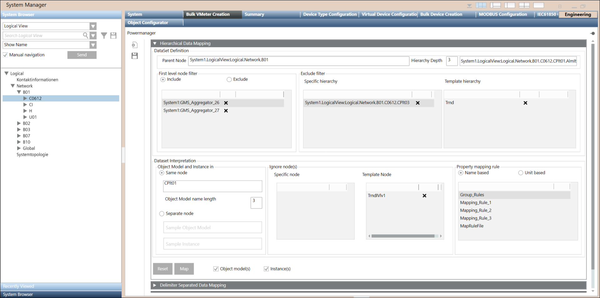
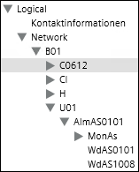
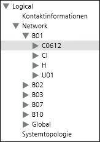
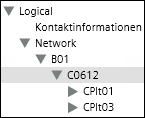

Hierarchical Data Mapping Expander
The Hierarchical Data Mapping expander provides options to map System Browser data to Powermanager. This data is represented in a hierarchical format and transformed as object models and instances which are saved in a JSON file. This JSON file is then imported in Powermanager and the object model and device instances in the file are mapped as Powermanager devices.

Dataset Definition
Provides options to create and configure a dataset that include defining the dataset and filtering unwanted nodes.

- Parent Node - Includes a node in the System Browser hierarchy that forms a dataset. In the above screenshot, node B01 is considered as the parent node.
- Hierarchy Depth - Defines the complete hierarchy of the dataset. Drag-and-drop a child node from a lower level of the selected parent node. Depending on the level of the selected child node, the total number of levels display as the Hierarchy Depth. In the above screenshot, the node WdAS0101at level 3 is considered as the node at the desired hierarchy depth. Therefore, the hierarchy depth is 3.
First level node filter

- Include - Drag-and-drop the node(s) from within the parent node to be included in the dataset. Only the selected node will form a part of the dataset. All other nodes will be excluded from the dataset. In the above screenshot, the node C0612 and U01 are considered as the Include filters, therefore only these two nodes are considered as the dataset. All other nodes in the parent node B01 will be excluded from the dataset.
- Exclude - Drag-and-drop the node(s) from within the parent node to be excluded from the dataset.

Click to remove any listed node from First level node filter.
Exclude filter

- Specific hierarchy - Drag-and-drop the nodes to be excluded from the dataset that is derived after applying the first level node filter. In this case the complete hierarchy of the selected nodes is excluded from the dataset.
Example - If you have added node C0612 with child nodes CPlt01 and CPlt03 as the First level node include filter and you add CPlt03 as the Exclude filter > Specific hierarchy, then the only the CPlt01 node will be included in the dataset. - Template hierarchy - Drag-and-drop the common nodes (for example, trend nodes) to be excluded from the dataset that is derived after applying the first level node filter. The complete hierarchy of the selected nodes is excluded from the dataset.
Dataset Interpretation
Provides options to interpret the configured dataset and includes activities such as defining the object model and device instance names, ignoring specific and general nodes from the dataset, defining the mapping rule, and generating the JSON file.

- Object Model and Instance in Same node - Drag-and-drop the node that you want to set as the name for object model and the device instance. In Object Model name length, specify the length of the object model. For example, if you have dropped the CPlt01 node and have specified the length as 3, then the name of the Object Model will be CPl and the name of the instance will be CPlt01.
- Object Model and Instance in Separate node - Drag-and-drop the node that you want to define as the name for the object model and another node that you want to define as the name for the device instance. For example, if you add the nodes, AlmAS0101 and MonAs, then the Object Model will be created with the name AlmAS0101 and instances will be created with the name, MonAs.

Ignore nodes
- Specific node - Drag and drop a particular node to be excluded from the dataset. In this case only the selected node is excluded. Any child nodes within the selected node are not excluded.
- Template node - Drag-and-drop the common nodes to be excluded from the dataset. In this case only the selected node is excluded. Any child nodes within the selected node are not excluded.
Property mapping rule
Select a name or unit based property mapping rule to map the object properties. The property mapping rules are created in the Virtual Device Bulk Import Rules. (See Defining Virtual Devices Bulk Import Rules).
- Name based - Displays a list of name based property mapping rules.
- Unit based - Displays a list of unit based property mapping rules.
Object models
Select this box to create an object model with the specified values in the Same node or Separate node fields.
Instances
Select this box to create object instances according to the values specified in the Same node or Separate node fields.
Reset
Resets the values entered in the fields.
Map
Creates a JSON file with the values specified in all the fields of the Hierarchical Data Mapping expander.